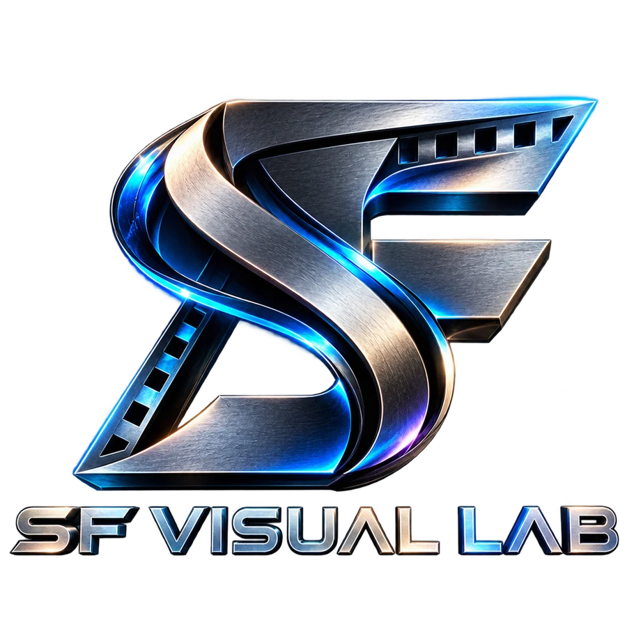

Make it
move.
Make it matter.
Your moments. A little imagination.
Something you’ll want to watch again.

Made to be felt.
A look into the visual world of SF.
Explore studio artwork and published edits.
We couldn’t load the portfolio. Please refresh to try again.
Your story.
My canvas.
Five ways to turn a moment
into something worth keeping.
01Wedding Edits
The glances, the laughter, the once-in-a-lifetime moments. Woven into a film that feels like you.
Let’s tell your story02Birthday Video V1
A thoughtful birthday film with your favourite photos, personal messages, and music. Simple, warm, and full of heart.
Make their day03Birthday Video V2 3D MOTION EXPERIENCE
Memories with a new dimension. Layered photos, moving cameras, cinematic depth, and atmospheric effects build an immersive birthday experience.
Create something immersive04Reels + Subtitles
A strong opening, a confident rhythm, and captions that are easy to follow. Edits made to connect with people on a small screen.
Build your next reel05Lyrical Videos
Words become part of the picture. Expressive typography, atmospheric visuals, and movement that follows every emotion in the song.
Bring the words to lifeOne creator.
Endless frames.
I’m Salman Faris, the creator behind SF Visual Lab. I turn photos, footage, and ideas into expressive edits — from personal memories to motion that catches the eye.
I care about the little things: the timing of a cut, the way a word moves, and how a film makes you feel.
Share your story
Tell me the occasion, the feeling, and what you have in mind.
We shape the edit
Share your photos, clips, and song. We agree on the style and scope.
Watch it come alive
Review your edit, refine the details, and receive your finished video.
Got a moment
in mind?
A birthday. A wedding. An idea.
Let’s give it a life beyond the camera roll.